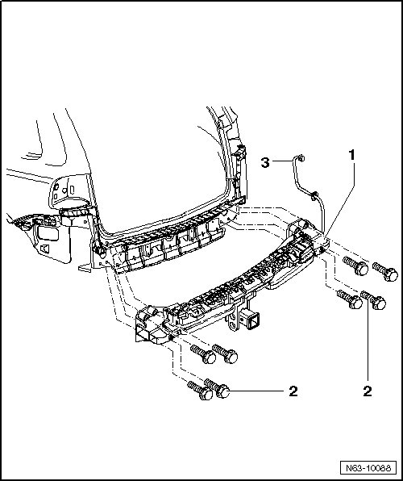

Tow Hitch Assembly Overview, USA
Rear Bumper
Tow Hitch Assembly Overview, USA
• The tightening specifications only apply to factory-installed trailer hitches.
• Obtain tightening specifications of other tow hitches from corresponding manufacturer.
• Information for the electrical system can be found under.

1 Trailer Hitch
• USA only
2 Bolt
• 4 pieces per side
• M 12 x 1.5, 10.9
• Tightening specification: 110 Nm
• Bolting sequence, refer to --> [ Tow Hitch Bolting Sequence, USA ] Tow Hitch Bolting Sequence, USA
3 Wiring harness